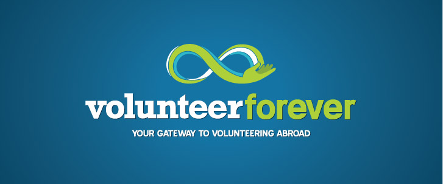

What can I do?
What you will be doing depends on your interest!
Here are some examples of volunteer positions
- care
- teaching
- conservation AND environment
- sports
- archaeology
- building
- agriculture AND farming
- creative AND performing arts
Top
How much is it?
It depends on the country and program you choose, but the range is from $2,000 ~ $6,000
Top
Questions
1. Language requirement?
- English is used, but for some destinations, you may have to be able to have basic conversations (Chinese, French, etc.)
2. What do prices include?
- It includes food, transportation, insurance, and etc.
3. How old do I have to be?
- It also depends on the program, but the minimum age is 16
4. What are the steps?
- Choose your program -> Application -> Get your visa -> Abroad!
Top
Where can I apply?
Here are some useful links!
You can apply for your volunteer job here
For 10 years, GoVolunteer.ca has been the go-to engagement platform that connects volunteers with not-for-profits and charities across BC and Alberta.
Govolunteer.ca was built in 2003 as an easy-to-use online tool that connects not-for-profits and charities with passionate community members looking to share their time and talents to support causes they care about.
Every year more than 2.5 million people visit Govolunteer.ca to seek out meaningful volunteer opportunities. They are looking to build stronger and more connected communities with your organization.
- Go Volunteer -

The idea behind Volunteer Forever was conceived after Founder and CEO Steve Weddle’s volunteer trip to India. The experience was life-changing and he returned home forever moved by his time volunteering overseas. However, the process of getting to this great experience was challenging. He realized there were significant information and financial barriers that kept many people from participating in these programs and helping others around the world. That’s when the idea for Volunteer Forever was born; a comprehensive online resource that would help volunteers find and fund their volunteer opportunities. Empowerment through information and resources! Steve quickly realized there were other people who had experienced the same challenges and were committed to working on a building a quality solution. Thus the Volunteer Forever team was born!
With Volunteer Forever, you can quickly create a profile and start fundraising right away. Volunteering abroad can be expensive, but it's also a noble endeavor that your friends, loved ones, and communities will be happy to support. You can also read reviews of other volunteers' experiences to help you select a volunteer abroad placement. Also, remember to blog throughout the process! Your friends and loved ones are excited about your journey abroad and frequent posts will bring them to your fundraising page on a regular basis.
At Volunteer Forever, our goal is to be the most trusted resource in the world for volunteering abroad. We believe in integrity, transparency, and honesty above all else. We've aligned our interests with yours in order to stay objective and provide you with the most accurate information possible.
- Volunteer Forever -

About Us
uVolunteer is a specialist international volunteer program, established in 2006 with the goal of creating meaningful, affordable volunteer opportunities abroad with a personal touch. We offer volunteer placements in safe, welcoming locations that allow our volunteers to experience a new way of life and sample rich culture and diverse environments.
- UVolunteer -
In the early 1990s, some students wanted a break from study - a "gap year," although the term wasn't yet in common use. They approached their geography professor about travelling and working in Eastern Europe. The professor, Dr. Peter Slowe, had difficulty finding any opportunities for this kind of travel combined with work experience, so he set about arranging for his students to go and teach English in Romania where he knew some fellow academics. This was how Projects Abroad began in 1992.
Until 1997, Projects Abroad was a small organization with just two part time staff sending university students to teach English in Eastern Europe. But with more and more people taking time out on academic and work-related breaks, and with many developing countries in need of self-funded volunteers, our organized volunteer programs started to mushroom around the world. Our volunteers can still teach English in Eastern Europe, but can also do many other types of work in many other places.
- Projects Abroad
Top